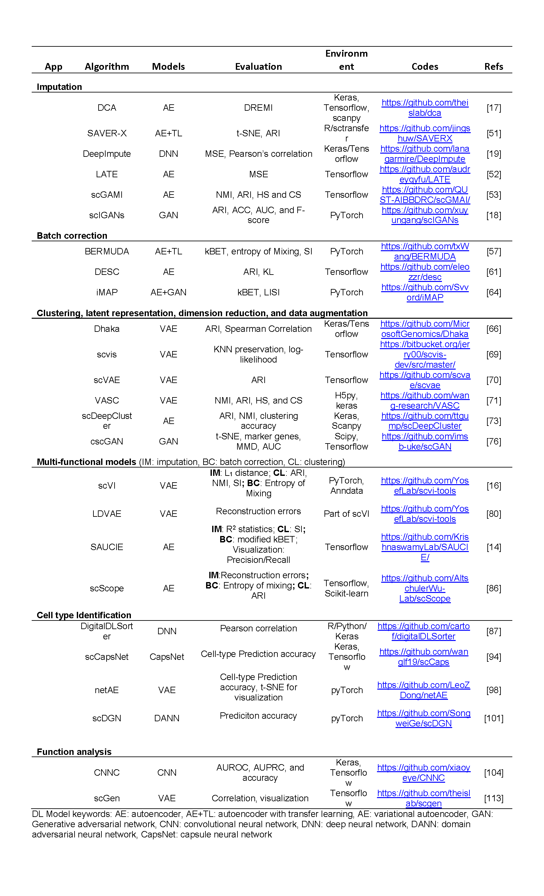
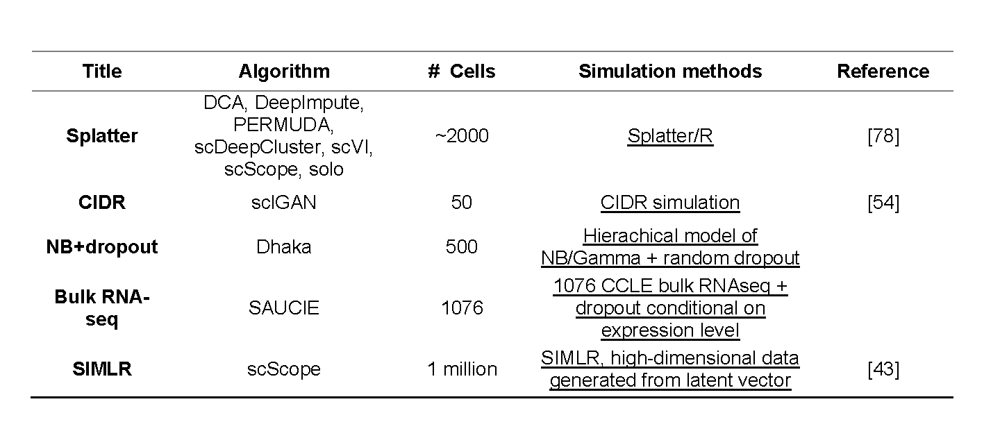
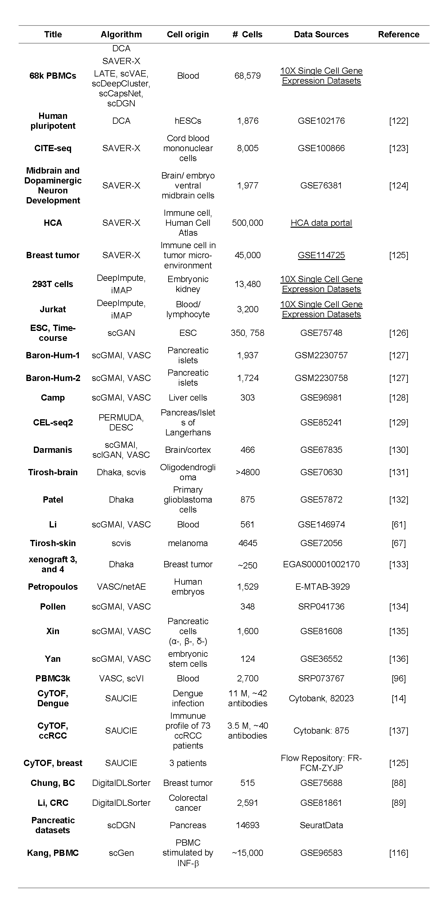
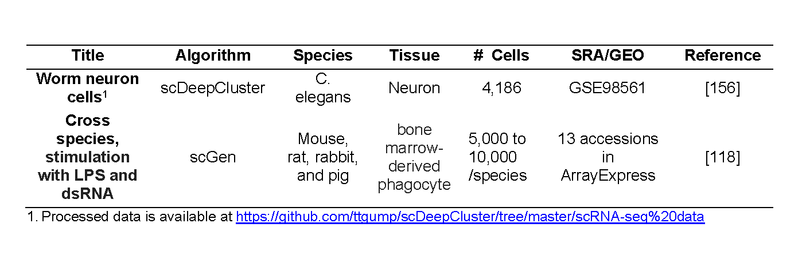
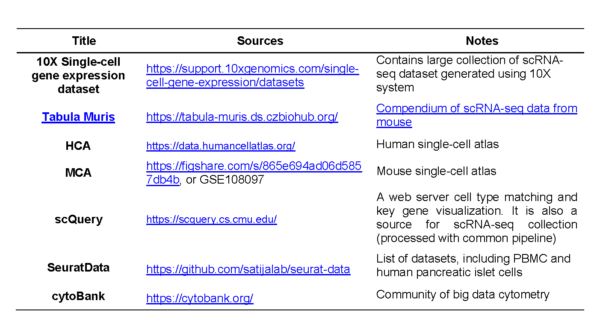
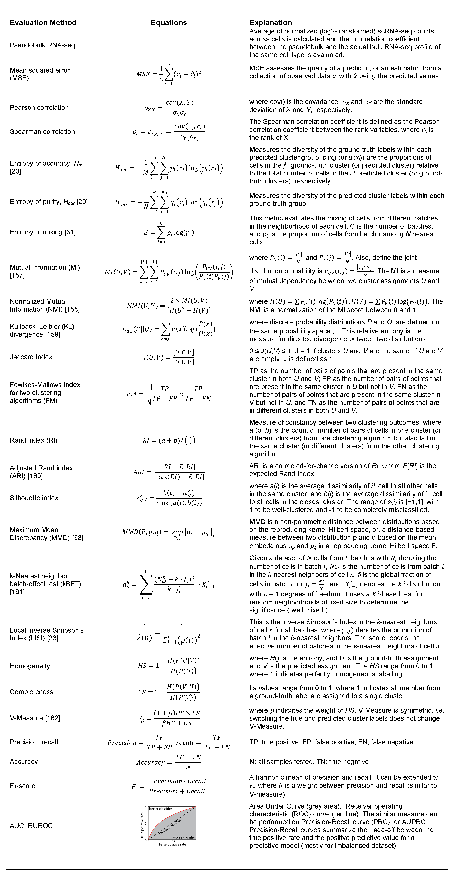

7 Tables

Figure 7.1: Deep Learning algorithms reviewed in the paper

Figure 7.2: Simulated single-cell data/algorithms

Figure 7.3: Human single-cell data sources used by different DL algorithms

Figure 7.4: Mouse single-cell data sources used by different DL algorithms

Figure 7.5: Single-cell data derived from other species

Figure 7.6: Large single-cell data source used by various algorithms

Figure 7.7: Evaluation metrics used in surveyed DL algorithms
Abdelaal, T., L. Michielsen, D. Cats, D. Hoogduin, H. Mei, M. J. T. Reinders, and A. Mahfouz. 2019. “A Comparison of Automatic Cell Identification Methods for Single-Cell RNA Sequencing Data.” Journal Article. Genome Biol 20 (1): 194. https://doi.org/10.1186/s13059-019-1795-z.
Amodio, M., D. van Dijk, K. Srinivasan, W. S. Chen, H. Mohsen, K. R. Moon, A. Campbell, et al. 2019. “Exploring Single-Cell Data with Deep Multitasking Neural Networks.” Journal Article. Nat Methods 16 (11): 1139–45. https://doi.org/10.1038/s41592-019-0576-7.
Arisdakessian, C., O. Poirion, B. Yunits, X. Zhu, and L. X. Garmire. 2019. “DeepImpute: An Accurate, Fast, and Scalable Deep Neural Network Method to Impute Single-Cell RNA-Seq Data.” Journal Article. Genome Biol 20 (1): 211. https://doi.org/10.1186/s13059-019-1837-6.
Becht, E., L. McInnes, J. Healy, C. A. Dutertre, I. W. H. Kwok, L. G. Ng, F. Ginhoux, and E. W. Newell. 2018. “Dimensionality Reduction for Visualizing Single-Cell Data Using UMAP.” Journal Article. Nat Biotechnol. https://doi.org/10.1038/nbt.4314.
Bost, P., A. Giladi, Y. Liu, Y. Bendjelal, G. Xu, E. David, R. Blecher-Gonen, et al. 2020. “Host-Viral Infection Maps Reveal Signatures of Severe COVID-19 Patients.” Journal Article. Cell 181 (7): 1475–1488 e12. https://doi.org/10.1016/j.cell.2020.05.006.
Butler, A., P. Hoffman, P. Smibert, E. Papalexi, and R. Satija. 2018. “Integrating Single-Cell Transcriptomic Data Across Different Conditions, Technologies, and Species.” Journal Article. Nat Biotechnol 36 (5): 411–20. https://doi.org/10.1038/nbt.4096.
Chen, G., B. Ning, and T. Shi. 2019. “Single-Cell RNA-Seq Technologies and Related Computational Data Analysis.” Journal Article. Front Genet 10: 317. https://doi.org/10.3389/fgene.2019.00317.
Eisenstein, M. 2020. “Single-Cell RNA-Seq Analysis Software Providers Scramble to Offer Solutions.” Journal Article. Nat Biotechnol 38 (3): 254–57. https://doi.org/10.1038/s41587-020-0449-8.
Eraslan, G., L. M. Simon, M. Mircea, N. S. Mueller, and F. J. Theis. 2019. “Single-Cell RNA-Seq Denoising Using a Deep Count Autoencoder.” Journal Article. Nat Commun 10 (1): 390. https://doi.org/10.1038/s41467-018-07931-2.
Finak, G., A. McDavid, M. Yajima, J. Deng, V. Gersuk, A. K. Shalek, C. K. Slichter, et al. 2015. “MAST: A Flexible Statistical Framework for Assessing Transcriptional Changes and Characterizing Heterogeneity in Single-Cell RNA Sequencing Data.” Journal Article. Genome Biol 16: 278. https://doi.org/10.1186/s13059-015-0844-5.
Hafemeister, C., and R. Satija. 2019. “Normalization and Variance Stabilization of Single-Cell RNA-Seq Data Using Regularized Negative Binomial Regression.” Journal Article. Genome Biol 20 (1): 296. https://doi.org/10.1186/s13059-019-1874-1.
Haghverdi, L., A. T. L. Lun, M. D. Morgan, and J. C. Marioni. 2018. “Batch Effects in Single-Cell RNA-Sequencing Data Are Corrected by Matching Mutual Nearest Neighbors.” Journal Article. Nat Biotechnol 36 (5): 421–27. https://doi.org/10.1038/nbt.4091.
Huang, M., J. Wang, E. Torre, H. Dueck, S. Shaffer, R. Bonasio, J. I. Murray, A. Raj, M. Li, and N. R. Zhang. 2018. “SAVER: Gene Expression Recovery for Single-Cell RNA Sequencing.” Journal Article. Nat Methods 15 (7): 539–42. https://doi.org/10.1038/s41592-018-0033-z.
Kharchenko, P. V., L. Silberstein, and D. T. Scadden. 2014. “Bayesian Approach to Single-Cell Differential Expression Analysis.” Journal Article. Nat Methods 11 (7): 740–42. https://doi.org/10.1038/nmeth.2967.
Kinker, G. S., A. C. Greenwald, R. Tal, Z. Orlova, M. S. Cuoco, J. M. McFarland, A. Warren, et al. 2020. “Pan-Cancer Single-Cell RNA-Seq Identifies Recurring Programs of Cellular Heterogeneity.” Journal Article. Nat Genet 52 (11): 1208–18. https://doi.org/10.1038/s41588-020-00726-6.
Korsunsky, I., N. Millard, J. Fan, K. Slowikowski, F. Zhang, K. Wei, Y. Baglaenko, M. Brenner, P. R. Loh, and S. Raychaudhuri. 2019. “Fast, Sensitive and Accurate Integration of Single-Cell Data with Harmony.” Journal Article. Nat Methods 16 (12): 1289–96. https://doi.org/10.1038/s41592-019-0619-0.
Lahnemann, D., J. Koster, E. Szczurek, D. J. McCarthy, S. C. Hicks, M. D. Robinson, C. A. Vallejos, et al. 2020. “Eleven Grand Challenges in Single-Cell Data Science.” Journal Article. Genome Biol 21 (1): 31. https://doi.org/10.1186/s13059-020-1926-6.
Li, W. V., and J. J. Li. 2018. “An Accurate and Robust Imputation Method scImpute for Single-Cell RNA-Seq Data.” Journal Article. Nat Commun 9 (1): 997. https://doi.org/10.1038/s41467-018-03405-7.
Linderman, G. C., M. Rachh, J. G. Hoskins, S. Steinerberger, and Y. Kluger. 2019. “Fast Interpolation-Based t-SNE for Improved Visualization of Single-Cell RNA-Seq Data.” Journal Article. Nat Methods 16 (3): 243–45. https://doi.org/10.1038/s41592-018-0308-4.
Lopez, R., J. Regier, M. B. Cole, M. I. Jordan, and N. Yosef. 2018. “Deep Generative Modeling for Single-Cell Transcriptomics.” Journal Article. Nat Methods 15 (12): 1053–58. https://doi.org/10.1038/s41592-018-0229-2.
Lun, A. T., K. Bach, and J. C. Marioni. 2016. “Pooling Across Cells to Normalize Single-Cell RNA Sequencing Data with Many Zero Counts.” Journal Article. Genome Biol 17: 75. https://doi.org/10.1186/s13059-016-0947-7.
Maaten, G. van der, L. & Hinton. 2008. “Visualizing Data Using t-SNE.” Journal Article. J. Mach. Learn 9: 2579–2605.
Macosko, E. Z., A. Basu, R. Satija, J. Nemesh, K. Shekhar, M. Goldman, I. Tirosh, et al. 2015. “Highly Parallel Genome-Wide Expression Profiling of Individual Cells Using Nanoliter Droplets.” Journal Article. Cell 161 (5): 1202–14. https://doi.org/10.1016/j.cell.2015.05.002.
Mannarapu, M., B. Dariya, and O. R. Bandapalli. 2021. “Application of Single-Cell Sequencing Technologies in Pancreatic Cancer.” Journal Article. Mol Cell Biochem 476 (6): 2429–37. https://doi.org/10.1007/s11010-021-04095-4.
Miao, Z., K. Deng, X. Wang, and X. Zhang. 2018. “DEsingle for Detecting Three Types of Differential Expression in Single-Cell RNA-Seq Data.” Journal Article. Bioinformatics 34 (18): 3223–24. https://doi.org/10.1093/bioinformatics/bty332.
Navin, N. E. 2015. “The First Five Years of Single-Cell Cancer Genomics and Beyond.” Journal Article. Genome Res 25 (10): 1499–1507. https://doi.org/10.1101/gr.191098.115.
Peng, T., Q. Zhu, P. Yin, and K. Tan. 2019. “SCRABBLE: Single-Cell RNA-Seq Imputation Constrained by Bulk RNA-Seq Data.” Journal Article. Genome Biol 20 (1): 88. https://doi.org/10.1186/s13059-019-1681-8.
Petegrosso, R., Z. Li, and R. Kuang. 2020. “Machine Learning and Statistical Methods for Clustering Single-Cell RNA-Sequencing Data.” Journal Article. Brief Bioinform 21 (4): 1209–23. https://doi.org/10.1093/bib/bbz063.
Picelli, S., A. K. Bjorklund, O. R. Faridani, S. Sagasser, G. Winberg, and R. Sandberg. 2013. “Smart-Seq2 for Sensitive Full-Length Transcriptome Profiling in Single Cells.” Journal Article. Nat Methods 10 (11): 1096–98. https://doi.org/10.1038/nmeth.2639.
Roweis, S. T., and L. K. Saul. 2000. “Nonlinear Dimensionality Reduction by Locally Linear Embedding.” Journal Article. Science 290 (5500): 2323–26. https://doi.org/10.1126/science.290.5500.2323.
Srinivasan, S., A. Leshchyk, N. T. Johnson, and D. Korkin. 2020. “A Hybrid Deep Clustering Approach for Robust Cell Type Profiling Using Single-Cell RNA-Seq Data.” Journal Article. RNA 26 (10): 1303–19. https://doi.org/10.1261/rna.074427.119.
Stuart, T., A. Butler, P. Hoffman, C. Hafemeister, E. Papalexi, 3rd Mauck W. M., Y. Hao, M. Stoeckius, P. Smibert, and R. Satija. 2019. “Comprehensive Integration of Single-Cell Data.” Journal Article. Cell 177 (7): 1888–1902 e21. https://doi.org/10.1016/j.cell.2019.05.031.
Subelj, L., and M. Bajec. 2011. “Unfolding Communities in Large Complex Networks: Combining Defensive and Offensive Label Propagation for Core Extraction.” Journal Article. Phys Rev E Stat Nonlin Soft Matter Phys 83 (3 Pt 2): 036103. https://doi.org/10.1103/PhysRevE.83.036103.
Traag, V. A., L. Waltman, and N. J. van Eck. 2019. “From Louvain to Leiden: Guaranteeing Well-Connected Communities.” Journal Article. Sci Rep 9 (1): 5233. https://doi.org/10.1038/s41598-019-41695-z.
Tran, H. T. N., K. S. Ang, M. Chevrier, X. Zhang, N. Y. S. Lee, M. Goh, and J. Chen. 2020. “A Benchmark of Batch-Effect Correction Methods for Single-Cell RNA Sequencing Data.” Journal Article. Genome Biol 21 (1): 12. https://doi.org/10.1186/s13059-019-1850-9.
Vallejos, C. A., J. C. Marioni, and S. Richardson. 2015. “BASiCS: Bayesian Analysis of Single-Cell Sequencing Data.” Journal Article. PLoS Comput Biol 11 (6): e1004333. https://doi.org/10.1371/journal.pcbi.1004333.
Vitak, S. A., K. A. Torkenczy, J. L. Rosenkrantz, A. J. Fields, L. Christiansen, M. H. Wong, L. Carbone, F. J. Steemers, and A. Adey. 2017. “Sequencing Thousands of Single-Cell Genomes with Combinatorial Indexing.” Journal Article. Nat Methods 14 (3): 302–8. https://doi.org/10.1038/nmeth.4154.
Wang, B., J. Zhu, E. Pierson, D. Ramazzotti, and S. Batzoglou. 2017. “Visualization and Analysis of Single-Cell RNA-Seq Data by Kernel-Based Similarity Learning.” Journal Article. Nat Methods 14 (4): 414–16. https://doi.org/10.1038/nmeth.4207.
Wauters, E., P. Van Mol, A. D. Garg, S. Jansen, Y. Van Herck, L. Vanderbeke, A. Bassez, et al. 2021. “Discriminating Mild from Critical COVID-19 by Innate and Adaptive Immune Single-Cell Profiling of Bronchoalveolar Lavages.” Journal Article. Cell Res 31 (3): 272–90. https://doi.org/10.1038/s41422-020-00455-9.
Welch, J. D., A. J. Hartemink, and J. F. Prins. 2016. “SLICER: Inferring Branched, Nonlinear Cellular Trajectories from Single Cell RNA-Seq Data.” Journal Article. Genome Biol 17 (1): 106. https://doi.org/10.1186/s13059-016-0975-3.
Wolf, F. A., P. Angerer, and F. J. Theis. 2018. “SCANPY: Large-Scale Single-Cell Gene Expression Data Analysis.” Journal Article. Genome Biol 19 (1): 15. https://doi.org/10.1186/s13059-017-1382-0.
Wolock, S. L., R. Lopez, and A. M. Klein. 2019. “Scrublet: Computational Identification of Cell Doublets in Single-Cell Transcriptomic Data.” Journal Article. Cell Syst 8 (4): 281–291 e9. https://doi.org/10.1016/j.cels.2018.11.005.
Xu, Y., Z. Zhang, L. You, J. Liu, Z. Fan, and X. Zhou. 2020. “scIGANs: Single-Cell RNA-Seq Imputation Using Generative Adversarial Networks.” Journal Article. Nucleic Acids Res 48 (15): e85. https://doi.org/10.1093/nar/gkaa506.